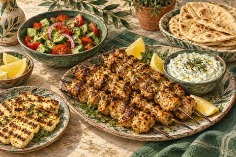
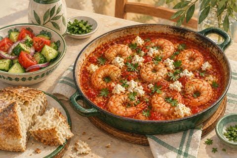
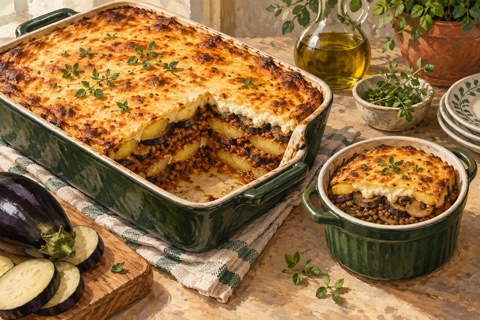

Maanantai4 ruokailijaa
Päivällinen
Kana- ja halloumisouvlakit ↗
Pitaleipiä, tsatsikia ja salaattikasviksia kana- tai halloumivartaiden kanssa.
Kuusi päivällistä sekä sunnuntain lounas ja jälkiruoka. Lauantaina ei valmisteta ruokaa.
Yleensä 4 annosta · torstaina 3 · lauantai vapaa

Avaa resepti ruoan nimestä. Ohjeessa ovat ainekset, valmistus ja mahdollinen kasvisversio.
Pitaleipiä, tsatsikia ja salaattikasviksia kana- tai halloumivartaiden kanssa.

Katkarapuja tomaatti-fetakastikkeessa, leipää ja kreikkalaista salaattia.
Lauantaille ei ole suunniteltu aterioita eikä ostoksia.

Kolme annosta naudanlihalla ja yksi linsseillä ja sienillä. Kasvikset ja valkokastike valmistetaan yhdessä.